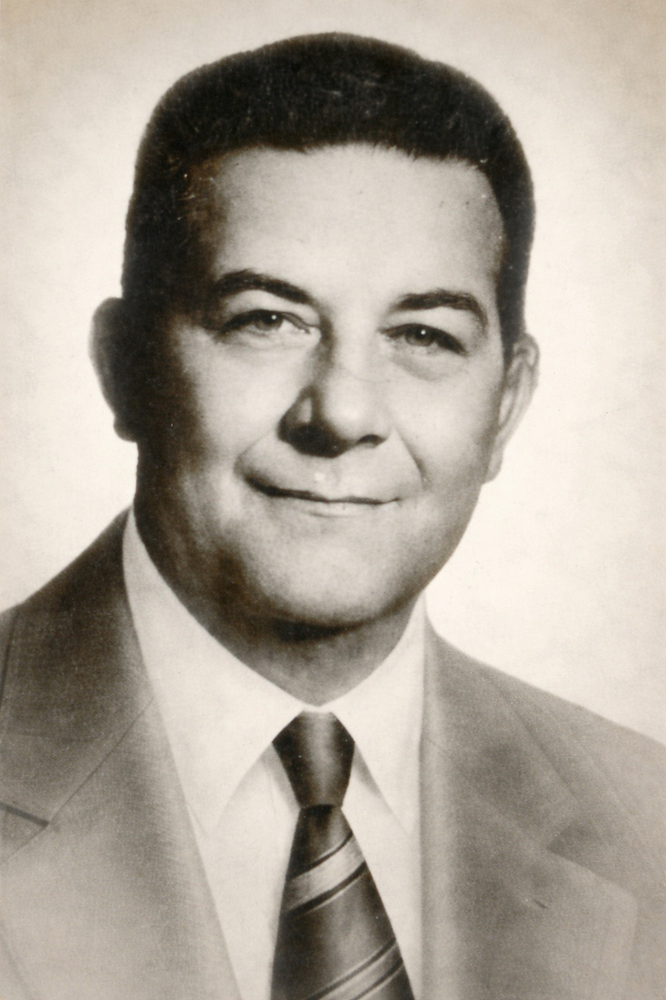
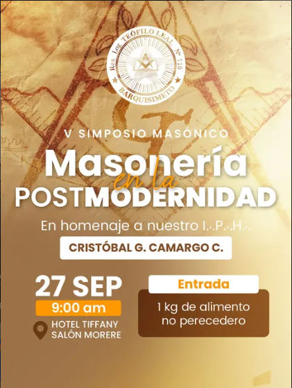
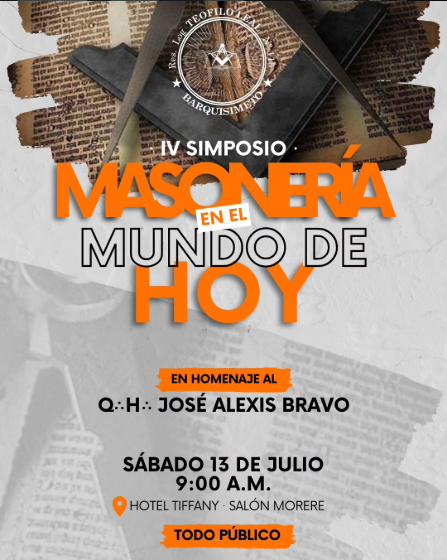
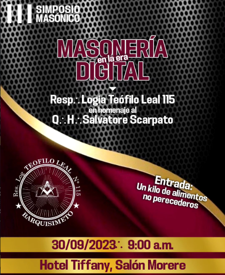
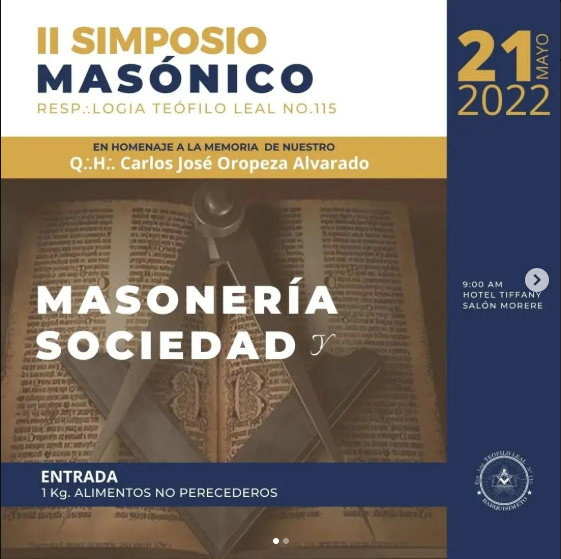
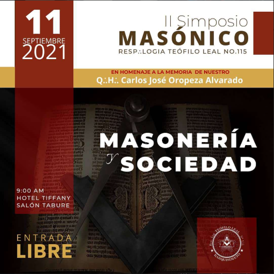
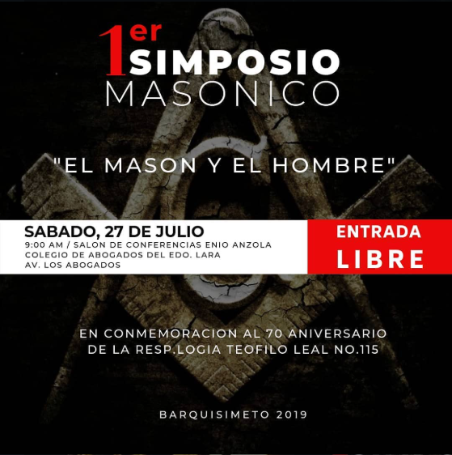

Bienvenidos
A la Respetable Logia Teófilo Leal Nº 115, un espacio dedicado al estudio, la formación moral y la fraternidad universal.
¿Qué es la Masonería?
La masonería es una institución filosófica, iniciática y fraternal que busca el perfeccionamiento moral e intelectual del ser humano. Promueve valores universales como la verdad, la justicia, la libertad, la igualdad y la fraternidad.
A través del estudio simbólico y el trabajo ritual, sus miembros buscan el conocimiento de sí mismos y contribuyen al progreso de la sociedad mediante la rectitud moral y el compromiso comunitario.
Quiénes Somos
Somos la Respetable Logia Teófilo Leal Nº 115, una institución fundada con el propósito de promover el crecimiento espiritual, moral e intelectual de nuestros miembros. Nos ubicamos en el Oriente de Barquisimeto, bajo los principios de fraternidad, discreción y compromiso social.
Nuestra logia es un espacio de encuentro donde hombres de bien trabajan conjuntamente por el perfeccionamiento personal y el beneficio de la humanidad.
Homenaje a Teófilo Leal

Teófilo Leal Berra (1866–1940) fue un destacado actor venezolano nacido en la parroquia La Candelaria de Caracas. A lo largo de su vida desarrolló una amplia labor como actor, poeta, escritor, periodista, músico, pintor y director teatral, dejando una huella significativa en la cultura venezolana.
Además de su trayectoria artística, fue un hombre de firmes valores dentro de la masonería. Su nombre honra nuestra logia como símbolo de virtud, fraternidad, cultura, lealtad y servicio, en reconocimiento a las huellas que dejó tanto en la institución masónica como en su vida cotidiana.
Principios Fundamentales
- ⬥ Fraternidad: Unión y solidaridad entre todos los hermanos.
- ⬥ Verdad: Búsqueda sincera del conocimiento y la verdad.
- ⬥ Justicia: Rectitud y equidad en nuestras acciones.
- ⬥ Libertad: Respeto a la libertad de conciencia y pensamiento.
- ⬥ Discreción: Reserva del carácter privado de nuestras actividades.
- ⬥ Estudio: Compromiso permanente con el aprendizaje.
- ⬥ Compromiso Social: Contribución al bienestar de la comunidad.
Identidad Institucional
♦ Misión:
Contribuir al desarrollo moral, intelectual y espiritual de nuestros miembros,
fomentando el pensamiento crítico, la fraternidad universal y el compromiso
responsable con la sociedad, bajo los principios de la masonería universal.
♦ Visión:
Ser una institución reconocida por su aporte significativo al crecimiento integral
del individuo y al fortalecimiento de los valores humanos fundamentales en nuestra comunidad.
♦ Valores Institucionales:
Discreción, Respeto, Responsabilidad, Transparencia ética y Servicio desinteresado a la humanidad.
Grados Masónicos
La masonería se estructura en tres grados fundamentales de iniciación:
1º Grado: Aprendiz
Introducción a los principios fundamentales. El Aprendiz comienza su camino de introspección
y aprendizaje del simbolismo masónico.
2º Grado: Compañero
Profundización del conocimiento. El Compañero desarrolla habilidades intelectuales y morales
en su formación continua.
3º Grado: Maestro
Culminación de la iniciación básica. El Maestro alcanza una comprensión elevada de los misterios
y responsabilidades masónicas.
Cada grado representa etapas de crecimiento personal hacia la iluminación y el perfeccionamiento del ser.
¿Cómo Ingresar?
Si eres un hombre libre, de buenas costumbres y de 21 años de edad o más, interesado en el perfeccionamiento moral y espiritual, puedes solicitar información sobre el proceso de solicitud de iniciación.
Requisitos básicos:
- Ser mayor de edad.
- Gozar de buena reputación moral.
- Tener sincero interés en los principios masónicos.
- Demostrar voluntad de aprendizaje y crecimiento.
Para más información sobre el proceso de solicitud, contáctanos directamente.
Nuestras Actividades
La logia desarrolla un conjunto de actividades orientadas a la formación y fraternal convivencia:
- Tenidas Regulares: Reuniones de trabajo ritual y docencia masónica.
- Docencia Masónica: Conferencias y charlas sobre filosofía, historia y simbolismo masónico.
- Actividades Comunitarias: Proyectos de beneficio social y filantrópico.
- Reuniones Sociales: Encuentros fraternales entre miembros.
- Celebraciones Especiales: Eventos conmemorativos del calendario masónico.
Cartelera de Actividades






Calendario de Eventos
Las tenidas de la logia se realizan regularmente. Para conocer el calendario completo de actividades y eventos especiales, te invitamos a contactarnos o seguir nuestras redes sociales.
Conéctate con nosotros para recibir actualizaciones sobre nuestros próximos eventos.
Contacto e Información
¿Tienes preguntas o deseas información sobre nuestra logia? Nos encantaría conocerte.
📧 Correo: logiateofiloleal115@gmail.com
📱 WhatsApp: Haz clic en el botón para contactarnos directamente.
📍 Ubicación: Oriente de Barquisimeto